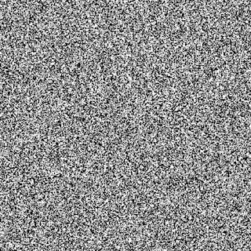

<!DOCTYPE html>
<html>
  <head>
    <title> Implicit Categorization Task </title>
    <link href="https://unpkg.com/jspsych@7.0.0/css/jspsych.css" rel="stylesheet" type="text/css" />
    <script src="https://ajax.googleapis.com/ajax/libs/jquery/1.11.1/jquery.min.js"></script>
		<script src="https://cdn.jsdelivr.net/npm/bowser@2.5.3/es5.min.js"></script>
    <script src="https://cdnjs.cloudflare.com/ajax/libs/svg.js/2.6.3/svg.min.js"></script>
    <script src="jsPsych-6.3.1/jspsych.js"></script>
    <script src="jsPsych-6.3.1/plugin-html-keyboard-response.js"></script> 
    <script src="jsPsych-6.3.1/plugin-html-button-response.js"></script>
    <script src="jsPsych-6.3.1/plugin-preload.js"></script>
    <script src="jsPsych-6.3.1/plugin-fullscreen.js"></script>
    <script src="jsPsych-6.3.1/plugin-survey-multi-choice.js"></script>
    <script src="jsPsych-6.3.1/plugin-survey-text.js"></script>
    <script src="jsPsych-6.3.1/plugin-virtual-chinrest.js"></script>
    <script src="https://brain2ai.github.io/jsPsychSheet/jspsychsheet.js"></script> 
    <link rel="stylesheet" href="https://brain2ai.github.io/jsPsychSheet/jspsychsheet.css">
    <script src="https://ajax.googleapis.com/ajax/libs/jquery/3.5.1/jquery.min.js"></script>


    <style> 
      #prime {
        animation: fadeIn .1s linear;
  	    opacity: 1;
      } 
      #target {
        animation: fadeIn .1s linear;
  	    opacity: 1;
      } 
      .blue-line{
        color:blue
      }
      .red-line{
        color:red
      }
      @keyframes fadeIn{
        from {opacity: 0;}
        to {opacity: 1;}
      }
      .jspsych-display-element{
        font-size: 20px
      }
      .jspsych-btn{
        font-size: 20px
      }
    </style>
  </head>
  <body></body>
  <script>

    const jsPsych = initJsPsych();


    function getRandomDuration (min, max){
      return Math.random()*(max-min)+min
    }

    var cat_list = ["Cat1.jpg", "Cat2.jpg", "Cat3.jpg", "Cat4.jpg", "Cat5.jpg"];
    var dog_list = ["Dog1.jpg", "Dog2.jpg", "Dog3.jpg", "Dog4.jpg", "Dog5.jpg"];
    var target_list = ["pic1.png", "pic2.png", "pic3.png", "pic4.png", "pic5.png", "pic6.png", "pic7.png", "pic8.png", 
                        "pic9.png", "pic10.png", "pic11.png", "pic12.png", "pic13.png", "pic14.png", "pic15.png", "pic16.png", 
                        "pic17.png", "pic18.png", "pic19.png", "pic20.png", "pic21.png", "pic22.png", "pic23.png", "pic24.png", 
                        "pic25.png", "pic26.png", "pic27.png", "pic28.png", "pic29.png", "pic30.png", "pic31.png", "pic32.png",
                        "pic33.png", "pic34.png", "pic35.png", "pic36.png", "pic37.png", "pic38.png", "pic39.png", "pic40.png"
    ];

    var img_list = [];

    var timeline = [];
    var n_trials = target_list.length;
    var order = 0;

    /* pass idnum, cond, type from Qualtrics URL*/
    var idnum = parseInt(jsPsych.data.getURLVariable('idnum'))
    var cond = parseInt(jsPsych.data.getURLVariable('cond'))
    var type = parseInt(jsPsych.data.getURLVariable('type'))
    //var idnum = 15987
    //var cond = 1
    //var type = 3

    var prime_list = []
    var type_img = []
    var control_img_list = []
    var exp_prime_list

    // dog or cat 
    if (cond === 1) {
      prime_list = cat_list;} 
    else if (cond === 2){
      prime_list = dog_list;
    }

    // group 5 prime images into either type_img or control_img_list
    for (let i = 0; i < prime_list.length; i++) {
      let image = prime_list[i];
      if (image.includes(type)) {
        type_img.push(image);} 
      else {
        control_img_list.push(image);}
    }

    // replicate these prime images
    type_img = jsPsych.randomization.repeat(type_img, target_list.length/2/type_img.length);
    control_img_list = jsPsych.randomization.repeat(control_img_list, target_list.length/2/control_img_list.length)
    exp_prime_list = [...control_img_list,...type_img] //length=40

    var instruction_1 = {
      type: jsPsychHtmlButtonResponse,
      data: { screen: "instruction_1" },
			stimulus: `
          <p>Hello, we are interested in your opinions about a variety of things! 
          When you are ready to start the experiment please press start to begin. 
          You can continue in 3 seconds.</p>`,
			choices: ["Click to continue"],
      on_load: () => {
        document.querySelector('button').disabled = true;
        setTimeout( () => { document.querySelector('button').disabled = false}, 3000)
      }
		};
		timeline.push(instruction_1);

    var fullscreen_on = {
      type: jsPsychFullscreen,
      data: { screen: "fullscreen_on" },
      fullscreen_mode: true
    } 
    timeline.push(fullscreen_on);

    var instruction_2 = {
      type: jsPsychHtmlButtonResponse,
      data: { screen: "instruction_2" },
			stimulus: `
      <p>In this part of the experiment, we are looking at how people make simple but quick judgments. 
      For each trial, you will see a brief presentation of a simple painting.</p>
      <p class="blue-line"><b>Your job is to judge the pleasantness of the painting.</b></p>
      <p><b>Each painting will remain on the screen for a brief time. 
      When prompted, you should respond by indicating whether you think the 
      painting you saw is more or less pleasant than average.</b></p>
      <p class="red-line"><b>If it's <u>more pleasant</u> than average, press the 'K' key.</b></p>
      <p class="red-line"><b>If it's <u>less pleasant</u> than average, press the 'D' key.</b></p>
      <p>When the study is fully loaded, the button below will activate. 
      Click it to indicate you have read these instructions, and are ready 
      to continue to the second page of instructions. 
      (Refresh the page if the button does not become active.)</p>
      <p><i><u><b>Please only proceed after you have CAREFULLY read these instructions 
      and are definitely sure that you are ready!</i></u></b></p>
      `,
			choices: ["Click to continue"],
      on_load: () => {
        document.querySelector('button').disabled = true;
        setTimeout( () => { document.querySelector('button').disabled = false}, 3000)
      }
		};
		timeline.push(instruction_2);

    var instruction_3 = {
      type: jsPsychHtmlButtonResponse,
      data: { screen: "instruction_3" },
			stimulus: `
      <p>Immediately before each painting you rate, a photograph will appear very briefly.</p>
      <p>It is important to note that having just seen a positive photo can sometimes make you 
      judge the painting more positively than you otherwise would. Likewise, having just seen 
      a negative photo can make you judge the painting more negatively. Because we are interested 
      in how people can avoid being biased, please try your absolute best not to let the photos 
      bias your judgment of the paintings. Give us an honest assessment of the paintings, regardless of 
      the photos that precede them. </p> <p>When you are ready to begin, place your fingers 
      on the 'd' (less pleasant) and 'k' (more pleasant) keys, and press the space bar.</p>
      `,
			choices: ["Click to continue"],
      on_load: () => {
        document.querySelector('button').disabled = true;
        setTimeout( () => { document.querySelector('button').disabled = false}, 3000)
      },
      on_finish: function(data){
        order = 0
        jsPsych.data.addProperties({
          idnum: idnum,
          cond: cond,
          type: type
        });
      }
		};
	timeline.push(instruction_3);

    var fixation = {
      type: jsPsychHtmlKeyboardResponse,
      stimulus: "<p style='font-size:50px'>+</p>",
      choices: "NO_KEYS",
      trial_duration: getRandomDuration(225, 275),
      on_finish: function(data){
        data.screen = "fixation"
        data.order = order
      }
    }

    var all_stimuli = [];
    for (let i = 0; i < exp_prime_list.length; i++) {
      all_stimuli.push({ cue_prime: exp_prime_list[i], cue_target: target_list[i] });
    }

    var cue_prime, cue_target, trial_type

    var prime = {
      type: jsPsychHtmlKeyboardResponse,
      stimulus: function(){
        cue_prime = jsPsych.timelineVariable("cue_prime")

        if (type_img.includes(cue_prime)){
          trial_type = "type_trial"
        }
        else if (control_img_list.includes(cue_prime)){
          trial_type = "control_trial"
        }
        console.log(cue_prime)

        return (``)
      },
      choices: "NO_KEYS",
      trial_duration: getRandomDuration(65, 85),
      on_finish: function(data){
        data.screen = "prime"
        data.order = order
        data.trial_type = trial_type
      } 
    } 

    var blank = {
      type: jsPsychHtmlKeyboardResponse,
      stimulus: "",
      choices: "NO_KEYS",
      trial_duration: getRandomDuration(100, 150),
      on_finish: function(data){
        data.screen = "blank"
        data.order = order
        data.trial_type = trial_type
      }
    }

    var target = {
      type: jsPsychHtmlKeyboardResponse,
      stimulus: function(){
        cue_target = jsPsych.timelineVariable('cue_target')
        console.log(cue_target)
        return (``)
      },
      choices: "NO_KEYS",
      trial_duration: getRandomDuration(85, 115),
      on_finish: function(data){
        data.screen = "target"
        data.order = order
        data.trial_type = trial_type
        data.image = cue_target
      }
    }

    var response = {
      type: jsPsychHtmlKeyboardResponse,
      stimulus: ``,
      choices: ["d", "k"],
      on_finish: function(data){
        data.screen = "response"
        data.image = cue_target
        data.trial_type = trial_type
        data.order = order;
      }
    }

    var interval = {
      type: jsPsychHtmlKeyboardResponse,
      stimulus: "",
      choices: "NO_KEYS",
      trial_duration: getRandomDuration(750, 1250),
      on_finish: function(data){
        data.screen = "interval"
        data.order = order
        order += 1;
      }
    }
    
    var experiment = {
      timeline: [fixation, prime, blank, target, response, interval],
      timeline_variables: all_stimuli,
      randomize_order: true 
    }
    timeline.push(experiment)
    
    var fullscreen_off = {
      type: jsPsychFullscreen,
      fullscreen_mode: false,
      data: {screen: "fullscreen_off"},

      on_finish: function(){
        window.location = "https://yalesurvey.ca1.qualtrics.com/jfe/form/SV_3eGwFDSbXv6tSbc?idnum=" + idnum + "&cond=" + cond + "&type=" + type;

        //save each participant's file indepently to a local server
	saveData('CatDog_idnum_'+idnum, jsPsych.data.get().filter({screen: 'response'}).csv());
        // append every participant's data to a master file
        appendMasterFile(jsPsych.data.get().filter({screen: 'response'}).csv());

        url = "https://script.google.com/macros/s/AKfycby-1CVPhHEU26FzzthmZdpkLPwRKiaf-XWzjU9-MctmtCyUPjxJ6XKdOumUNgHq7ro1CA/exec";
        jsPsychSheet.uploadData(url, jsPsych.data.get().filter({screen: 'response'}).csv())
      }
    } 
    timeline.push(fullscreen_off)

    function saveData(name, data){
      var xhr = new XMLHttpRequest();
      xhr.open('POST', 'write_data.php'); //change 
      xhr.setRequestHeader('Content-Type', 'application/json');
      xhr.send(JSON.stringify({filename: name, filedata: data}));
    }

    function appendMasterFile(data){
      var xhr = new XMLHttpRequest();
      xhr.open('POST', 'appended_master_file.php'); // Change the URL 
      xhr.setRequestHeader('Content-Type', 'application/json');
      xhr.send(JSON.stringify({filedata: data}));
    }

    jsPsych.run(timeline);

    </script>
</html>
